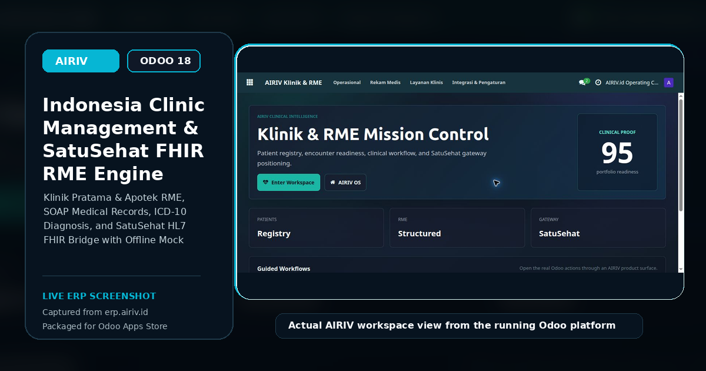

Klinik Pratama & Hospital Management ERP for Odoo 18 Community. Features Rekam Medis Elektronik (RME SOAP anamnesis), ICD-10/ICD-9-CM coding, and automated SatuSehat HL7 FHIR REST synchronization.

Engineered specifically for Indonesian statutory compliance and operational efficiency
Standardized Subjective, Objective, Assessment, and Plan medical records.
Automated synchronization of Encounters, Conditions, and Observations to Kemenkes.
Built-in master database for international disease and procedure coding.
Queue management for General Practice (Poli Umum) and specialty clinics.
Fulfills statutory mandates for mandatory Electronic Medical Records in clinics.
Tests FHIR resource generation (Encounter/Condition) without consuming live API tokens.
Chronological view of patient visits, vital signs, and past diagnostic records.
Transfers doctor prescriptions directly to the dispensary cashier for billing.
| Framework Compatibility | Odoo 18.0 Community Edition (OWL 2.0 & App Drawer Native) |
| License & Price | GNU LGPL-3 • Free ($0.00) |
| Dependencies | base, account, mail |
| Regulatory Standards | Permenkes No. 24/2022, Kemenkes RI SatuSehat Platform, HL7 FHIR Standard |
| Developer | Riv Cloud Management (https://airiv.id) |
Developed for Indonesian Businesses & Enterprises • Riv Cloud Management
Visit airiv.id